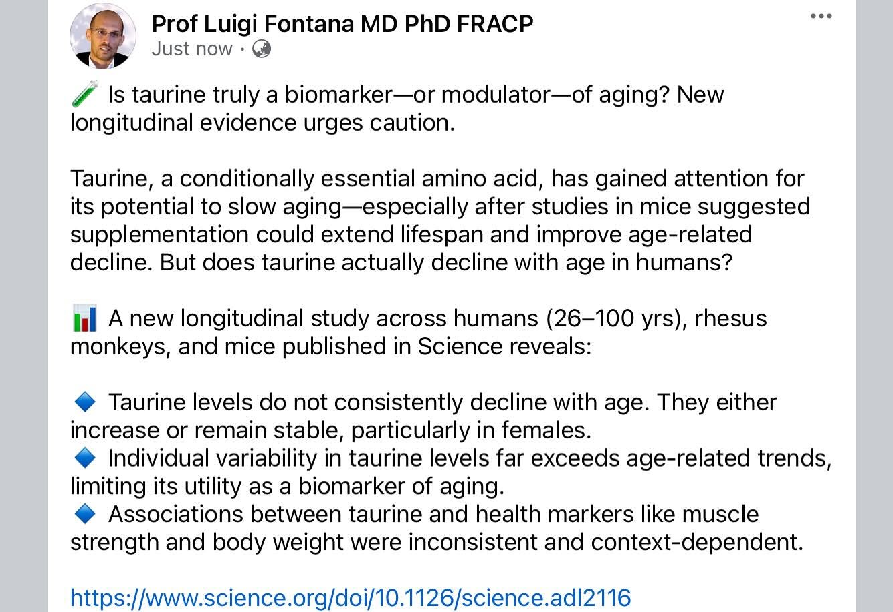
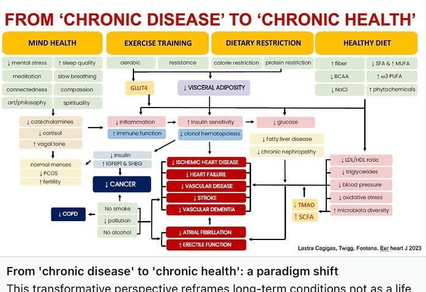

AI summary & key facts
A shared summary of a large longitudinal study across humans (26-100 years), monkeys and mice finds taurine levels do not consistently fall with age, often rise (especially in women), and vary more between individuals than with age. The post notes that taurine, like NAD+ boosters and resveratrol, shows promise in animals but human evidence is limited.
- Humans 26-100 years, monkeys and mice studied
- Taurine often rises with age, especially in women
- Links to muscle strength and body weight were inconsistent
🧪 Is taurine the secret to slowing aging? New longitudinal research says: not so fast.
A major study in Science across humans (26–100 yrs), monkeys & mice found:
🔹 Taurine levels don’t consistently decline with age—often they rise, especially in women.
🔹 Individual differences far outweigh age trends.
🔹 Links to muscle strength & body weight? Inconsistent.
⚠️ Bottom line: Taurine isn’t a reliable biomarker of aging in healthy individuals.
💊 Just like NAD⁺ boosters & resveratrol, taurine shows promise in animals—but human evidence is still limited. Be cautious of the hype.
✅ What is proven to support healthy aging?
🥦 Plant-forward, nutrient-rich diet
🏋️♀️ Movement: strength + cardio + flexibility
😴 Quality sleep & recovery
🧘 Stress & emotional health
🚭 Avoid harmful exposures: smoking, alcohol, processed meats, pollutants
No magic pill—just science-based habits that work. Longevity is built, not bought.
#HealthyAging #LongevityScience #Taurine #AntiAging #Geroscience #LifestyleMedicine #EvidenceBased #Lifespan #ScienceNotHype


